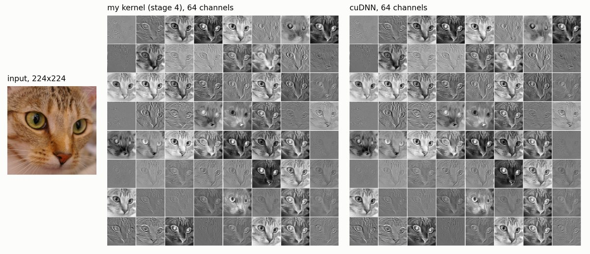

𓆝 𓆟 𓆞
hi, i'm purnoor!
computer science + informatics @ ut austin, may 2028
cs for the backend.
informatics for the user.
𓆟what i've built
cuconv
a 2d convolution written in cuda four times, each version measured against cudnn on the same inputs in the same process. i wanted to find out how much of a vendor library a hand-written kernel can reach on a real card, and to be able to say exactly what is in the way of the rest. pick a layer and see.
the textbook shared-memory tile is slower than the naive kernel on every shape with more than three input channels. nsight compute said why: bank conflicts on the strided reads, two barriers per input channel, and the naive version was getting its reuse out of l1 for free. reading the counters that way is what picked every step after it, and the last one runs the fma pipe at 90%.

cuda, c++, nsight compute, cudnn, pytorch
itchfeed
a nasdaq itch feed handler in c++. parses the binary stream and rebuilds the order book. i rewrote the book to never allocate in the hot path and measured what it bought.
c++20, linux, perf, cmake, jenkins
reposter
cut out the repetitive part of advertising across facebook groups, built around the chrome debugger api when the dom wouldn't cooperate.
1,000+ paying users on the earlier listing
typescript, supabase, postgres rls, stripe
tern
live ingestion over kafka. holds per-device ordering under 64 concurrent clients, rejects duplicates and stale readings, and fails the build on a latency regression.
java, spring boot, kafka, jenkins, docker
event-time-pipeline
what happens after kafka. windows on device event time under a two-minute watermark so late readings land in the right bucket, then serves history through trino.
73,019 events/sec · 3.05 s p95 batch · 200,000 events
scala, spark, trino, parquet, elasticsearch
𓆞where i've swum so far
swe intern, security and identity
swe intern, google cloud
technical pm intern
ai data engineering intern
undergrad researcher, deep learning and data engineering